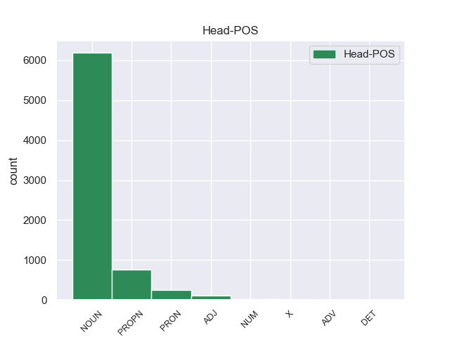
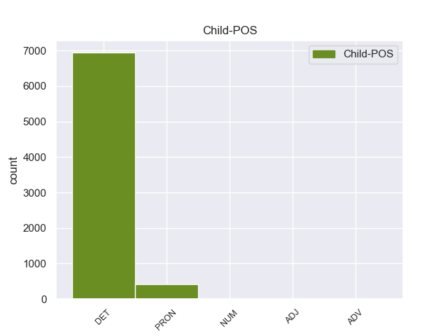

Distribution of features within this leaf



Agreement Rules sorted by frequency.
- When the dependent token is the determiner(det) of the head token, and the head token is NOUN
1 Ευελπιστώ _ _ _ _ 0 _ _ _
2 ότι _ _ _ _ 0 _ _ _
3 η _ _ _ _ 0 _ _ _
4 απόφαση _ _ _ _ 0 _ _ _
5 αυτή _ _ _ _ 0 _ _ _
6 , _ _ _ _ 0 _ _ _
7 συμπεριλαμβανομένης _ _ _ _ 0 _ _ _
8 και _ _ _ _ 0 _ _ _
9 της _ _ _ _ 0 _ _ _
10 αιτιολογικής _ _ _ _ 0 _ _ _
11 έκθεσης _ _ _ _ 0 _ _ _
12 που _ _ _ _ 0 _ _ _
13 την _ _ _ _ 0 _ _ _
14 συνοδεύει _ _ _ _ 0 _ _ _
15 , _ _ _ _ 0 _ _ _
16 θα _ _ _ _ 0 _ _ _
17 διαβιβαστεί _ _ _ _ 0 _ _ _
18 σ _ _ _ _ 0 _ _ _
19 τις _ _ _ _ 0 _ _ _
20 γαλλικές _ _ _ _ 0 _ _ _
21 αρχές _ _ _ _ 0 _ _ _
22 , _ _ _ _ 0 _ _ _
23 εφόσον _ _ _ _ 0 _ _ _
24 υπερψηφιστεί _ _ _ _ 0 _ _ _
25 από _ _ _ _ 0 _ _ _
26 το ο DET _ Case=Acc|Definite=Def|Gender=Neut|Number=Sing|PronType=Art 27 det _ _
27 Κοινοβούλιο κοινοβούλιο NOUN _ Case=Acc|Gender=Neut|Number=Sing 0 _ _ _
28 . _ _ _ _ 0 _ _ _
1 Ο _ _ _ _ 0 _ _ _
2 Εισαγγελέας _ _ _ _ 0 _ _ _
3 σ _ _ _ _ 0 _ _ _
4 τη ο DET _ Case=Acc|Gender=Fem|Number=Sing 5 det _ _
5 Γαλλία Γαλλία PROPN _ Case=Acc|Gender=Fem|Number=Sing 0 _ _ _
6 έχει _ _ _ _ 0 _ _ _
7 το _ _ _ _ 0 _ _ _
8 δικαίωμα _ _ _ _ 0 _ _ _
9 να _ _ _ _ 0 _ _ _
10 εκπληρώνει _ _ _ _ 0 _ _ _
11 τα _ _ _ _ 0 _ _ _
12 καθήκοντά _ _ _ _ 0 _ _ _
13 του _ _ _ _ 0 _ _ _
14 βάσει _ _ _ _ 0 _ _ _
15 του _ _ _ _ 0 _ _ _
16 νόμου _ _ _ _ 0 _ _ _
17 και _ _ _ _ 0 _ _ _
18 το _ _ _ _ 0 _ _ _
19 Σώμα _ _ _ _ 0 _ _ _
20 δεν _ _ _ _ 0 _ _ _
21 λαμβάνει _ _ _ _ 0 _ _ _
22 θέση _ _ _ _ 0 _ _ _
23 σχετικά _ _ _ _ 0 _ _ _
24 με _ _ _ _ 0 _ _ _
25 αυτό _ _ _ _ 0 _ _ _
26 . _ _ _ _ 0 _ _ _
1 Υπάρχει _ _ _ _ 0 _ _ _
2 μια _ _ _ _ 0 _ _ _
3 άλλη _ _ _ _ 0 _ _ _
4 πλευρά _ _ _ _ 0 _ _ _
5 της _ _ _ _ 0 _ _ _
6 υπόθεσης _ _ _ _ 0 _ _ _
7 , _ _ _ _ 0 _ _ _
8 η ο DET _ Case=Nom|Definite=Def|Gender=Fem|Number=Sing|PronType=Art 9 det _ _
9 οποία οποίος PRON _ Case=Nom|Gender=Fem|Number=Sing|Person=3|PronType=Rel 0 _ _ _
10 , _ _ _ _ 0 _ _ _
11 δυστυχώς _ _ _ _ 0 _ _ _
12 , _ _ _ _ 0 _ _ _
13 γεννά _ _ _ _ 0 _ _ _
14 την _ _ _ _ 0 _ _ _
15 υποψία _ _ _ _ 0 _ _ _
16 ότι _ _ _ _ 0 _ _ _
17 η _ _ _ _ 0 _ _ _
18 πρόνοια _ _ _ _ 0 _ _ _
19 σχετικά _ _ _ _ 0 _ _ _
20 με _ _ _ _ 0 _ _ _
21 τις _ _ _ _ 0 _ _ _
22 προϋποθέσεις _ _ _ _ 0 _ _ _
23 ελεύθερης _ _ _ _ 0 _ _ _
24 διεξαγωγής _ _ _ _ 0 _ _ _
25 του _ _ _ _ 0 _ _ _
26 κοινοβουλευτικού _ _ _ _ 0 _ _ _
27 έργου _ _ _ _ 0 _ _ _
28 δεν _ _ _ _ 0 _ _ _
29 απασχόλησε _ _ _ _ 0 _ _ _
30 επαρκώς _ _ _ _ 0 _ _ _
31 την _ _ _ _ 0 _ _ _
32 εισαγγελική _ _ _ _ 0 _ _ _
33 αρχή _ _ _ _ 0 _ _ _
34 : _ _ _ _ 0 _ _ _
1 Είναι _ _ _ _ 0 _ _ _
2 σημαντικό _ _ _ _ 0 _ _ _
3 να _ _ _ _ 0 _ _ _
4 υπογραμμίσω _ _ _ _ 0 _ _ _
5 το _ _ _ _ 0 _ _ _
6 γεγονός _ _ _ _ 0 _ _ _
7 ότι _ _ _ _ 0 _ _ _
8 και _ _ _ _ 0 _ _ _
9 οι _ _ _ _ 0 _ _ _
10 δύο _ _ _ _ 0 _ _ _
11 βουλευτές _ _ _ _ 0 _ _ _
12 διατρανώνουν _ _ _ _ 0 _ _ _
13 σθεναρά _ _ _ _ 0 _ _ _
14 την _ _ _ _ 0 _ _ _
15 αθωότητά _ _ _ _ 0 _ _ _
16 τους _ _ _ _ 0 _ _ _
17 και _ _ _ _ 0 _ _ _
18 καταγγέλλουν _ _ _ _ 0 _ _ _
19 αυτό _ _ _ _ 0 _ _ _
20 που _ _ _ _ 0 _ _ _
21 οι ο DET _ Case=Nom|Definite=Def|Gender=Masc|Number=Plur|PronType=Art 22 det _ _
22 ίδιοι ίδιος ADJ _ Case=Nom|Gender=Masc|Number=Plur 0 _ _ _
23 θεωρούν _ _ _ _ 0 _ _ _
24 καταχρήσεις _ _ _ _ 0 _ _ _
25 σ _ _ _ _ 0 _ _ _
26 τη _ _ _ _ 0 _ _ _
27 διαδικασία _ _ _ _ 0 _ _ _
28 δίωξης _ _ _ _ 0 _ _ _
29 . _ _ _ _ 0 _ _ _
1 Με _ _ _ _ 0 _ _ _
2 αυτές _ _ _ _ 0 _ _ _
3 τις _ _ _ _ 0 _ _ _
4 κατηγορίες _ _ _ _ 0 _ _ _
5 , _ _ _ _ 0 _ _ _
6 από _ _ _ _ 0 _ _ _
7 τις _ _ _ _ 0 _ _ _
8 οποίες _ _ _ _ 0 _ _ _
9 η _ _ _ _ 0 _ _ _
10 πρώτη _ _ _ _ 0 _ _ _
11 αφορά _ _ _ _ 0 _ _ _
12 λαθρεμπόριο _ _ _ _ 0 _ _ _
13 όπλων _ _ _ _ 0 _ _ _
14 κλπ. _ _ _ _ 0 _ _ _
15 , _ _ _ _ 0 _ _ _
16 και _ _ _ _ 0 _ _ _
17 βαρύνει _ _ _ _ 0 _ _ _
18 τόσο _ _ _ _ 0 _ _ _
19 τον _ _ _ _ 0 _ _ _
20 κ. _ _ _ _ 0 _ _ _
21 Pasqua _ _ _ _ 0 _ _ _
22 όσο _ _ _ _ 0 _ _ _
23 και _ _ _ _ 0 _ _ _
24 τον _ _ _ _ 0 _ _ _
25 κ. _ _ _ _ 0 _ _ _
26 Marchiani _ _ _ _ 0 _ _ _
27 , _ _ _ _ 0 _ _ _
28 ενώ _ _ _ _ 0 _ _ _
29 η ο DET _ Case=Nom|Definite=Def|Gender=Fem|Number=Sing|PronType=Art 30 det _ _
30 δεύτερη δεύτερος NUM _ Case=Nom|Gender=Fem|Number=Sing|NumType=Ord 0 _ _ _
31 στρέφεται _ _ _ _ 0 _ _ _
32 μόνον _ _ _ _ 0 _ _ _
33 εναντίον _ _ _ _ 0 _ _ _
34 του _ _ _ _ 0 _ _ _
35 κ. _ _ _ _ 0 _ _ _
36 Pasqua _ _ _ _ 0 _ _ _
37 , _ _ _ _ 0 _ _ _
38 οι _ _ _ _ 0 _ _ _
39 ανακριτές _ _ _ _ 0 _ _ _
40 δικαστές _ _ _ _ 0 _ _ _
41 ζητούν _ _ _ _ 0 _ _ _
42 την _ _ _ _ 0 _ _ _
43 άρση _ _ _ _ 0 _ _ _
44 της _ _ _ _ 0 _ _ _
45 βουλευτικής _ _ _ _ 0 _ _ _
46 ασυλίας _ _ _ _ 0 _ _ _
47 των _ _ _ _ 0 _ _ _
48 εν _ _ _ _ 0 _ _ _
49 λόγω _ _ _ _ 0 _ _ _
50 δύο _ _ _ _ 0 _ _ _
51 κυρίων _ _ _ _ 0 _ _ _
52 , _ _ _ _ 0 _ _ _
53 προκειμένου _ _ _ _ 0 _ _ _
54 να _ _ _ _ 0 _ _ _
55 τους _ _ _ _ 0 _ _ _
56 επιβληθούν _ _ _ _ 0 _ _ _
57 ορισμένα _ _ _ _ 0 _ _ _
58 μέτρα _ _ _ _ 0 _ _ _
59 δικαστικής _ _ _ _ 0 _ _ _
60 επιτήρησης _ _ _ _ 0 _ _ _
61 : _ _ _ _ 0 _ _ _
62 να _ _ _ _ 0 _ _ _
63 τους _ _ _ _ 0 _ _ _
64 απαγορευθεί _ _ _ _ 0 _ _ _
65 η _ _ _ _ 0 _ _ _
66 επαφή _ _ _ _ 0 _ _ _
67 με _ _ _ _ 0 _ _ _
68 διάφορους _ _ _ _ 0 _ _ _
69 μάρτυρες _ _ _ _ 0 _ _ _
70 ή _ _ _ _ 0 _ _ _
71 συγκατηγορουμένους _ _ _ _ 0 _ _ _
72 σ _ _ _ _ 0 _ _ _
73 τις _ _ _ _ 0 _ _ _
74 υποθέσεις _ _ _ _ 0 _ _ _
75 αυτές _ _ _ _ 0 _ _ _
76 και _ _ _ _ 0 _ _ _
77 η _ _ _ _ 0 _ _ _
78 μετάβαση _ _ _ _ 0 _ _ _
79 σε _ _ _ _ 0 _ _ _
80 διάφορες _ _ _ _ 0 _ _ _
81 χώρες _ _ _ _ 0 _ _ _
82 , _ _ _ _ 0 _ _ _
83 καθώς _ _ _ _ 0 _ _ _
84 και _ _ _ _ 0 _ _ _
85 να _ _ _ _ 0 _ _ _
86 τους _ _ _ _ 0 _ _ _
87 επιβληθεί _ _ _ _ 0 _ _ _
88 ενδεχομένως _ _ _ _ 0 _ _ _
89 η _ _ _ _ 0 _ _ _
90 καταβολή _ _ _ _ 0 _ _ _
91 εγγύησης _ _ _ _ 0 _ _ _
92 . _ _ _ _ 0 _ _ _
1 Ο ο DET _ Case=Nom|Definite=Def|Gender=Masc|Number=Sing|PronType=Art 2 det _ _
2 Μπαράκ Μπαράκ X _ Case=Nom|Gender=Masc|Number=Sing 0 _ _ _
3 Ομπάμα _ _ _ _ 0 _ _ _
4 ανέφερε _ _ _ _ 0 _ _ _
5 ότι _ _ _ _ 0 _ _ _
6 « _ _ _ _ 0 _ _ _
7 ήδη _ _ _ _ 0 _ _ _
8 υπάρχουν _ _ _ _ 0 _ _ _
9 πολλές _ _ _ _ 0 _ _ _
10 αναφορές _ _ _ _ 0 _ _ _
11 για _ _ _ _ 0 _ _ _
12 πόλεμο _ _ _ _ 0 _ _ _
13 με _ _ _ _ 0 _ _ _
14 το _ _ _ _ 0 _ _ _
15 Ιράν _ _ _ _ 0 _ _ _
16 » _ _ _ _ 0 _ _ _
17 και _ _ _ _ 0 _ _ _
18 επεσήμανε _ _ _ _ 0 _ _ _
19 τέτοιες _ _ _ _ 0 _ _ _
20 συζητήσεις _ _ _ _ 0 _ _ _
21 « _ _ _ _ 0 _ _ _
22 είναι _ _ _ _ 0 _ _ _
23 προς _ _ _ _ 0 _ _ _
24 όφελος _ _ _ _ 0 _ _ _
25 της _ _ _ _ 0 _ _ _
26 Τεχεράνης _ _ _ _ 0 _ _ _
27 γιατί _ _ _ _ 0 _ _ _
28 αυξάνουν _ _ _ _ 0 _ _ _
29 τις _ _ _ _ 0 _ _ _
30 τιμές _ _ _ _ 0 _ _ _
31 του _ _ _ _ 0 _ _ _
32 πετρελαίου _ _ _ _ 0 _ _ _
33 , _ _ _ _ 0 _ _ _
34 σ _ _ _ _ 0 _ _ _
35 το _ _ _ _ 0 _ _ _
36 οποίο _ _ _ _ 0 _ _ _
37 βασίζεται _ _ _ _ 0 _ _ _
38 η _ _ _ _ 0 _ _ _
39 Ιρανική _ _ _ _ 0 _ _ _
40 Κυβέρνηση _ _ _ _ 0 _ _ _
41 για _ _ _ _ 0 _ _ _
42 την _ _ _ _ 0 _ _ _
43 χρηματοδότηση _ _ _ _ 0 _ _ _
44 του _ _ _ _ 0 _ _ _
45 πυρηνικού _ _ _ _ 0 _ _ _
46 της _ _ _ _ 0 _ _ _
47 προγράμματος _ _ _ _ 0 _ _ _
48 » _ _ _ _ 0 _ _ _
49 . _ _ _ _ 0 _ _ _
1 Εάν _ _ _ _ 0 _ _ _
2 προσπαθήσετε _ _ _ _ 0 _ _ _
3 να _ _ _ _ 0 _ _ _
4 κάνετε _ _ _ _ 0 _ _ _
5 τα ο DET _ Case=Nom|Definite=Def|Gender=Neut|Number=Plur|PronType=Art 6 det _ _
6 πάντα πάντα ADV _ Case=Acc|Gender=Neut|Number=Plur 0 _ _ _
7 , _ _ _ _ 0 _ _ _
8 μπορεί _ _ _ _ 0 _ _ _
9 να _ _ _ _ 0 _ _ _
10 καταλήξετε _ _ _ _ 0 _ _ _
11 να _ _ _ _ 0 _ _ _
12 κάνετε _ _ _ _ 0 _ _ _
13 πολύ _ _ _ _ 0 _ _ _
14 λίγα _ _ _ _ 0 _ _ _
15 . _ _ _ _ 0 _ _ _
1 Η _ _ _ _ 0 _ _ _
2 διαμάχη _ _ _ _ 0 _ _ _
3 μεταξύ _ _ _ _ 0 _ _ _
4 Ρωσίας _ _ _ _ 0 _ _ _
5 και _ _ _ _ 0 _ _ _
6 Ουκρανίας _ _ _ _ 0 _ _ _
7 για _ _ _ _ 0 _ _ _
8 το _ _ _ _ 0 _ _ _
9 μέλλον _ _ _ _ 0 _ _ _
10 της _ _ _ _ 0 _ _ _
11 Κριμαίας _ _ _ _ 0 _ _ _
12 κορυφώνεται _ _ _ _ 0 _ _ _
13 και _ _ _ _ 0 _ _ _
14 οι _ _ _ _ 0 _ _ _
15 Τάταροι _ _ _ _ 0 _ _ _
16 , _ _ _ _ 0 _ _ _
17 άλλη άλλος PRON _ Case=Acc|Gender=Fem|Number=Sing|Person=3|PronType=Ind 18 det _ _
18 μια ένας DET _ Case=Acc|Definite=Ind|Gender=Fem|Number=Sing|PronType=Art 0 _ _ _
19 απ’ _ _ _ _ 0 _ _ _
20 τις _ _ _ _ 0 _ _ _
21 μειονότητες _ _ _ _ 0 _ _ _
22 που _ _ _ _ 0 _ _ _
23 ζουν _ _ _ _ 0 _ _ _
24 σ _ _ _ _ 0 _ _ _
25 την _ _ _ _ 0 _ _ _
26 επίμαχη _ _ _ _ 0 _ _ _
27 περιοχή _ _ _ _ 0 _ _ _
28 , _ _ _ _ 0 _ _ _
29 βρίσκονται _ _ _ _ 0 _ _ _
30 σε _ _ _ _ 0 _ _ _
31 μειονεκτική _ _ _ _ 0 _ _ _
32 θέση _ _ _ _ 0 _ _ _
33 . _ _ _ _ 0 _ _ _
Disagree Examples:
1 Η _ _ _ _ 0 _ _ _
2 σημαντικότητα _ _ _ _ 0 _ _ _
3 του _ _ _ _ 0 _ _ _
4 Αχέροντα _ _ _ _ 0 _ _ _
5 ήταν _ _ _ _ 0 _ _ _
6 μεγάλη _ _ _ _ 0 _ _ _
7 κατά _ _ _ _ 0 _ _ _
8 την _ _ _ _ 0 _ _ _
9 αρχαιότητα _ _ _ _ 0 _ _ _
10 , _ _ _ _ 0 _ _ _
11 οπότε _ _ _ _ 0 _ _ _
12 και _ _ _ _ 0 _ _ _
13 ιδρύθηκε _ _ _ _ 0 _ _ _
14 σ _ _ _ _ 0 _ _ _
15 την _ _ _ _ 0 _ _ _
16 βορειοανατολική _ _ _ _ 0 _ _ _
17 όχθη _ _ _ _ 0 _ _ _
18 της _ _ _ _ 0 _ _ _
19 Αχερουσίας _ _ _ _ 0 _ _ _
20 το _ _ _ _ 0 _ _ _
21 Νεκρομαντείο _ _ _ _ 0 _ _ _
22 , _ _ _ _ 0 _ _ _
23 ο _ _ _ _ 0 _ _ _
24 σημαντικότερος _ _ _ _ 0 _ _ _
25 τόπος _ _ _ _ 0 _ _ _
26 επικοινωνίας _ _ _ _ 0 _ _ _
27 με _ _ _ _ 0 _ _ _
28 τους ο DET DET Case=Acc|Definite=Def|Gender=Masc|Number=Plur|PronType=Art 29 det _ _
29 νεκρούς νεκρός NOUN NOUN Case=Acc|Gender=Masc|Number=Sing 0 _ _ _
30 και _ _ _ _ 0 _ _ _
31 λατρείας _ _ _ _ 0 _ _ _
32 των _ _ _ _ 0 _ _ _
33 θεών _ _ _ _ 0 _ _ _
34 του _ _ _ _ 0 _ _ _
35 Κάτω _ _ _ _ 0 _ _ _
36 Κόσμου _ _ _ _ 0 _ _ _
37 . _ _ _ _ 0 _ _ _
1 Ένας ένας NUM NUM Case=Nom|Gender=Masc|Number=Sing|NumType=Card 0 _ _ _
2 από _ _ _ _ 0 _ _ _
3 αυτούς αυτός PRON PRON Case=Acc|Gender=Masc|Number=Plur|Person=3|PronType=Dem 1 det _ _
4 είναι _ _ _ _ 0 _ _ _
5 ο _ _ _ _ 0 _ _ _
6 αριθμός _ _ _ _ 0 _ _ _
7 των _ _ _ _ 0 _ _ _
8 βίαιων _ _ _ _ 0 _ _ _
9 επιθέσεων _ _ _ _ 0 _ _ _
10 εναντίον _ _ _ _ 0 _ _ _
11 δημοσιογράφων _ _ _ _ 0 _ _ _
12 , _ _ _ _ 0 _ _ _
13 για _ _ _ _ 0 _ _ _
14 τις _ _ _ _ 0 _ _ _
15 οποίες _ _ _ _ 0 _ _ _
16 ευθύνονται _ _ _ _ 0 _ _ _
17 κυρίως _ _ _ _ 0 _ _ _
18 οπαδοί _ _ _ _ 0 _ _ _
19 της _ _ _ _ 0 _ _ _
20 νεοναζιστικής _ _ _ _ 0 _ _ _
21 οργάνωσης _ _ _ _ 0 _ _ _
22 που _ _ _ _ 0 _ _ _
23 εκπροσωπείται _ _ _ _ 0 _ _ _
24 σ _ _ _ _ 0 _ _ _
25 την _ _ _ _ 0 _ _ _
26 ελληνική _ _ _ _ 0 _ _ _
27 Βουλή _ _ _ _ 0 _ _ _
28 και _ _ _ _ 0 _ _ _
29 ένας _ _ _ _ 0 _ _ _
30 άλλος _ _ _ _ 0 _ _ _
31 λόγος _ _ _ _ 0 _ _ _
32 είναι _ _ _ _ 0 _ _ _
33 το _ _ _ _ 0 _ _ _
34 κλείσιμο _ _ _ _ 0 _ _ _
35 της _ _ _ _ 0 _ _ _
36 ελληνικής _ _ _ _ 0 _ _ _
37 δημόσιας _ _ _ _ 0 _ _ _
38 τηλεόρασης _ _ _ _ 0 _ _ _
39 και _ _ _ _ 0 _ _ _
40 ο _ _ _ _ 0 _ _ _
41 τρόπος _ _ _ _ 0 _ _ _
42 με _ _ _ _ 0 _ _ _
43 τον _ _ _ _ 0 _ _ _
44 οποίο _ _ _ _ 0 _ _ _
45 έγινε _ _ _ _ 0 _ _ _
46 αυτό _ _ _ _ 0 _ _ _
47 " _ _ _ _ 0 _ _ _
48 , _ _ _ _ 0 _ _ _
49 επεσήμανε _ _ _ _ 0 _ _ _
50 η _ _ _ _ 0 _ _ _
51 κ. _ _ _ _ 0 _ _ _
52 Χολγκάντ _ _ _ _ 0 _ _ _
53 . _ _ _ _ 0 _ _ _
1 Επίσης _ _ _ _ 0 _ _ _
2 , _ _ _ _ 0 _ _ _
3 κατά _ _ _ _ 0 _ _ _
4 τη _ _ _ _ 0 _ _ _
5 γνώμη _ _ _ _ 0 _ _ _
6 μου _ _ _ _ 0 _ _ _
7 , _ _ _ _ 0 _ _ _
8 πρέπει _ _ _ _ 0 _ _ _
9 να _ _ _ _ 0 _ _ _
10 αίρεται _ _ _ _ 0 _ _ _
11 η _ _ _ _ 0 _ _ _
12 απαίτηση _ _ _ _ 0 _ _ _
13 συγχρηματοδότησης _ _ _ _ 0 _ _ _
14 για _ _ _ _ 0 _ _ _
15 υποτροφίες _ _ _ _ 0 _ _ _
16 ύψους _ _ _ _ 0 _ _ _
17 μικρότερου _ _ _ _ 0 _ _ _
18 των ο DET DET Case=Gen|Definite=Def|Gender=Neut|Number=Plur|PronType=Art 20 det _ _
19 20.000 _ _ _ _ 0 _ _ _
20 ευρώ ευρώ NOUN NOUN Case=Acc|Gender=Neut|Number=Sing 0 _ _ _
21 . _ _ _ _ 0 _ _ _
1 Εξ _ _ _ _ 0 _ _ _
2 αιτίας _ _ _ _ 0 _ _ _
3 όμως _ _ _ _ 0 _ _ _
4 των _ _ _ _ 0 _ _ _
5 μεταξύ _ _ _ _ 0 _ _ _
6 τους _ _ _ _ 0 _ _ _
7 αντιζηλιών _ _ _ _ 0 _ _ _
8 καμία κανένας PRON PRON Case=Nom|Gender=Fem|Number=Sing|Person=3|PronType=Ind 0 _ _ _
9 εξ _ _ _ _ 0 _ _ _
10 αυτών αυτός PRON PRON Case=Gen|Gender=Neut|Number=Plur|Person=3|PronType=Dem 8 det _ _
11 δεν _ _ _ _ 0 _ _ _
12 είχε _ _ _ _ 0 _ _ _
13 τη _ _ _ _ 0 _ _ _
14 δύναμη _ _ _ _ 0 _ _ _
15 της _ _ _ _ 0 _ _ _
16 απ' _ _ _ _ 0 _ _ _
17 ευθείας _ _ _ _ 0 _ _ _
18 προσάρτησης _ _ _ _ 0 _ _ _
19 του _ _ _ _ 0 _ _ _
20 χώρου _ _ _ _ 0 _ _ _
21 . _ _ _ _ 0 _ _ _
1 Το _ _ _ _ 0 _ _ _
2 2002 _ _ _ _ 0 _ _ _
3 χρηματοδοτήθηκαν _ _ _ _ 0 _ _ _
4 10.029 _ _ _ _ 0 _ _ _
5 σχέδια _ _ _ _ 0 _ _ _
6 με _ _ _ _ 0 _ _ _
7 ποσόν _ _ _ _ 0 _ _ _
8 λίγο _ _ _ _ 0 _ _ _
9 μεγαλύτερο _ _ _ _ 0 _ _ _
10 των ο DET DET Case=Gen|Definite=Def|Gender=Fem|Number=Plur|PronType=Art 13 det _ _
11 80 _ _ _ _ 0 _ _ _
12 εκατ. _ _ _ _ 0 _ _ _
13 ευρώ ευρώ NOUN NOUN Case=Acc|Gender=Neut|Number=Sing 0 _ _ _
14 . _ _ _ _ 0 _ _ _